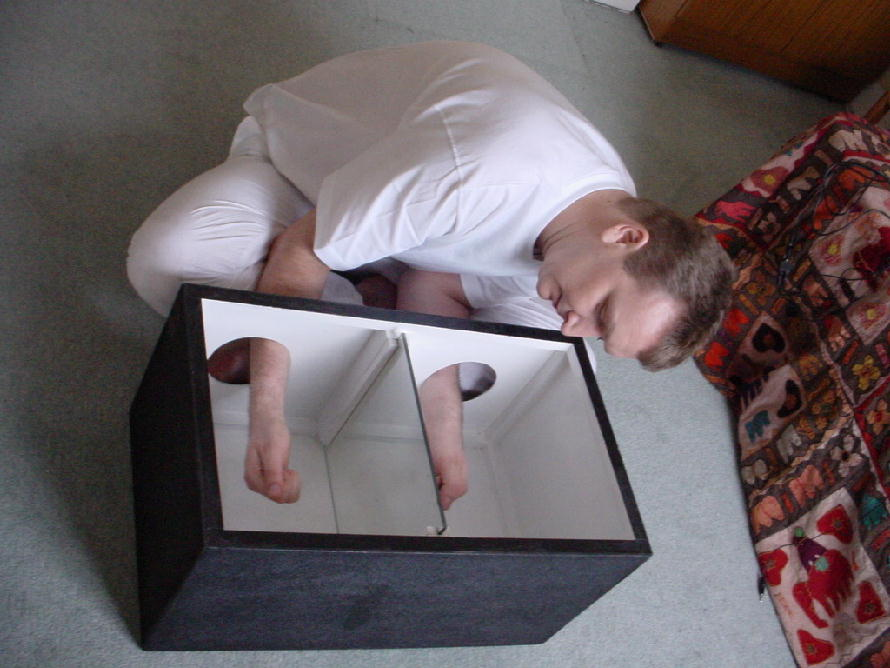

De acuerdo con una significativa mayoría de personas a mi alrededor, los eventos sobrenaturales ocurren a cada momento. En medio de una conversación, durante trágicos accidentes, en un encuentro inesperado, al mirar al cielo, cuando sueñan; yo, modestamente, proclamo mi perplejidad ante estos cuantiosos sucesos extraordinarios que, aparentemente, son activados por fuerzas invisibles e impenetrables para el conocimiento humano.
Como entre mis neuronas tienden a orbitar explicaciones basadas en evidencias, suelo observar estas demostraciones dentro de los delineamientos de la biología evolutiva y la cultura humana. No son ilusiones nuevas. Inagotables relatos de visiones milagrosas pueblan nuestro pasado, deslumbramientos que con un poco de conocimiento pueden ser ahora explicados como alucinaciones creadas por el cerebro en un momento de intenso (y a veces ni tanto) estrés. De hecho, mientras más me instruyo sobre lo que somos, más comprendo por qué es tan difícil cambiar el rumbo de la humanidad.
Deseo creer que no somos nuestra biología pero el comportamiento animal no fortalece esa esperanza. Por supuesto que existen excepciones que nos permiten arribar a la consoladora resolución de que podemos cambiar los dictámenes de nuestros genes y dejar de ser sus esclavos; sus “máquinas de supervivencia” para no dejar de citar a Dawkins. Pero es una muy difícil y compleja tarea, el hombre se habitúa a sus creencias, a su estilo de vida y a su forma de ser; cambiar requiere de esfuerzo, aprendizaje y motivación, cambiar muchas veces exige abandonar lo que nos ofrece placer; y todos podemos relacionarnos, de alguna forma, con la odiosa idea de renunciar a lo que nos gusta.

Más aún, los estudios neurológicos desenmascaran, poco a poco, a un cerebro con agenda propia. Un pequeño error en esa masa de células nerviosas es capaz de robarnos la identidad. Los hemisferios cerebrales, de ejecución cruzada, se dividen las faenas aunque mantienen una comunicación efectiva a través de toda la red, su trabajo exige hasta de un 20% de la energía que el ser humano consume y estudios recientes apuntan al hecho de que mantenernos conscientes todo el tiempo es una de las funciones que más esfuerzo requiere.
El cerebro interpreta, rellena, dispone, se deja llevar o se resiste, se habitúa y, como ratoncito en el laboratorio, busca una y otra vez eso que le da placer. Y en un planeta donde los seres humanos superamos los seis mil millones, el placer puede venir disfrazado de cualquier cosa.
Si profundizamos un poco más, los genes salen a camino; el ADN y la evolución. La decodificación de los genomas ha actuado como tirapiedra gravitacional del quehacer científico, impulsando el conocimiento varios peldaños más. Como bien lo describiera el autor Christopher Hitchens, “la persona más educada del mundo tiene ahora que admitir, no diré confesar, que sabe menos y menos. Aunque por lo menos, es menos y menos sobre más y más”.
El estudio actual de la genética sugiere lo poco que conocemos sobre el ADN, la doble hélice es mucho más que un recetario de proteínas (que no es poco) y los genes, en general, tienen su propio reloj, su particular manera de medir el tiempo. De hecho, muchos de ellos continúan ofreciendo efectividad y longevidad por millones de años. Sin embargo, a pesar de que este conocimiento está al alcance de la mayoría, los primitivos y de corta vida Homo sapiens continuamos enmascarando una biología que carece de motivaciones ni responde a propósitos o designios; pretendiendo “interpretar al intérprete” en la azotea con historias tan fantásticas como cada cerebro esté dispuesto a crear y creer; porque, evidentemente, no hemos economizado argumentos cuando de inventar historias se trata.
De hecho, decenas de investigaciones en distintos ámbitos de la ciencia han descubierto características comunes entre personalidades fantasiosas. Rober A. Baker publicó una serie de artículos en la década de los ochenta en la revista The Skeptical Inquirer, donde proponía que las personas que decían haber sido secuestradas por alienígenas, (como también han confirmado estudios sobre individuos que fantasean profundamente), “tienden además a poseer memorias vívidas, a ser fácilmente hipnotizadas y a padecer de sueños despiertos” (wake dreams), también conocidos como alucinaciones hipnopómpicas que ocurren entre el sueño y la vigilia, cuando la persona está a medio dormir o a medio despertar.
«Deseo creer que no somos nuestra biología pero el comportamiento animal no fortalece esa esperanza. Por supuesto que existen excepciones que nos permiten arribar a la consoladora resolución de que podemos cambiar los dictámenes de nuestros genes y dejar de ser sus esclavos; sus “máquinas de supervivencia” para no dejar de citar a Dawkins. Pero es una muy difícil y compleja tarea.»
Y efectivamente, las pruebas elaboradas hace varias décadas en la Universidad de Stanford para evaluar el nivel de hipnotizabilidad de una persona, congregan a grupos de individuos susceptibles a alucinaciones, especialmente aquellos cuyos niveles están entre siete y doce. (Las pruebas de Stanford evalúan el nivel de facilidad para la hipnosis del 0 al 12, este último siendo una persona fácilmente hipnotizable).

Otro buen ejemplo neurológico lo leí hace unos días en un “nutritivo” artículo en la revista Skeptic que investiga a fondo el efecto placebo. Al parecer, los mecanismos que permiten el funcionamiento de la popular pastillita de azúcar son mucho más complejos en sus ramificaciones a la hora de actuar. El artículo invocó en mí pensamientos sobre los dolores fantasmas que padecen ciertos pacientes después de amputaciones y la simple forma en que el neurólogo Vilayanur Ramachandran erradicó el problema en algunos de ellos.
{kind=link}
Estos padecimientos son creados por el cerebro; un error neuronal intenta llenar el espacio del brazo o la pierna que ya no existe y lo peor es que también causa dolor debido, quizá, a la sospecha de que algo anda mal y a la resistencia feroz de no querer permitir que la persona, o el recipiente de dicho cerebro, se entere; (como intentar rellenar un enorme punto ciego quizá sazonado con un poco del efecto nocebo). Ramachandran, que ha examinado cuantiosos casos de daños cerebrales y analizado sus consecuencias, creó una caja con un espejo a un lado, el paciente situaba la extremidad que no había perdido dentro de la caja lo que le daba la impresión de poseer todavía la que había sido amputada. Este reconocimiento permitía alivio, aunque muchas veces momentáneo, del dolor “fantasma” en la extremidad inexistente.
El placebo parece funcionar de la misma compleja forma y esa combinación de biología, percepción y razonamiento junto a las variables culturales y los memes que se desprenden de ellas, influyen en cómo reaccionamos a fenómenos tan importantes en el proceso de la evolución animal como la percepción del dolor.
Por supuesto, la efectividad del placebo ya no se pone en duda (se emplea en la investigación científica de forma rutinaria para añadir validez a los resultados) y ahora también conocemos más sobre la jerarquía en la que parece desempeñarse con mayor efectividad. Por ejemplo, la cirugía placebo funciona mejor que la inyección placebo, la inyección funciona mejor que la pastilla, los tratamientos falsos de acupuntura también funcionan mejor que las pastillas placebos y estas últimas funcionan más efectivamente si son grandes y de colores específicos. Risiblemente, mientras más costoso sea el placebo, mejor ejecutará su efecto en el paciente, lo mismo si se trata de placebo bajo el nombre de una marca reconocida. Por último, funciona mucho mejor cuando el doctor le dice al paciente, “esta pastilla te quitará el dolor”, en vez de “esta pastilla podría quitarte el dolor”.
Para la doctora Harriet Hall, autora del artículo en el Skeptic, cuatro mecanismos entran en juego al producirse este fenómeno: la expectativa, el condicionamiento, la motivación y los opiáceos endógenos. En la primera nos encontramos con un fenómeno fisiológico establecido, tendemos a ver lo que esperamos ver y a sentir alivio si nos lo dice la medicina que acabamos de comprar, de marca reconocida y a un muy alto precio (por ello funciona tan bien la publicidad y mientras los reyes del mercadeo conozcan más sobre nuestra biología, más sutil será la forma que encontrarán para manipularnos). En la segunda, sin proponérnoslo, invocamos enseguida a Pavlov y sus perros, nosotros los animales humanos también actuamos bajo las reglas del condicionamiento pavloviano, reaccionando a estímulos secundarios como si se trataran de primarios.
Hall explica, además, que la motivación para sanar actúa como un impulso fuerte hacia la mejoría, de hecho, las personas más intensamente motivadas suelen responder robustamente al placebo. Por último están los químicos cerebrales que se portan como sustancias opiáceas, aliviando el dolor. Estudios con resonancia han observado a los receptores para estas sustancias activarse cuando la persona recibe la información de que está tomando una medicina fuerte, cuando de hecho es sólo un inerte placebo.
Los caminos que toman los cerebros humanos son incontables y los mecanismos que lo permiten son tan elaborados como la doble hélice en nuestras células y tan funcional como un pequeño cistrón. Aquí, sobre el planeta, los “grandes” de verdad son los genes, ellos han originado este lío y mientras más pronto lo reconozcamos más rápido comenzaremos a organizarnos sobre lo que se debe hacer al respecto; sólo así aumentarán (aunque quizás en irremediablemente pocas) las probabilidades de salir con un poco de “dignidad” de este gigantesco atolladero.
El monstruo en el clóset
Fantasear no es cosa de niños
Los humanos crecemos y dejamos atrás muchas fantasías, no sólo las tontas infantiles sino también ideologías propias de la juventud. Es un proceso de desarrollo dominado otra vez por el órgano gris y blanco que habita en nuestras cabezas junto al ambiente en que crecemos. La neurología ha observado cerebros a distintas edades y es posible explicar el comportamiento de niños, adolescentes y adultos siguiendo la evolución de las regiones neuronales.
Pero no hay que ser neurólogo para saber que los niños se creen todo lo que el adulto diga. El cerebro infantil procesa lo inverosímil como posible (especialmente si una persona mayor de su confianza lo asegura repetidamente) debido a que no ha evolucionado lo suficiente para permitirles un discernimiento racional sobre lo que ocurre a su alrededor. Ellos creen en el monstruo en el clóset o el alma que deambula en pena (también se creen todo lo que sale en televisión y pedirán cada cosita que venden los comerciales). Y no creo en erradicar la fantasía infantil sino enseñarla como lo que es, un parque de diversiones donde la creatividad neuronal juega y encuentra placer. Por lo demás, ejercitar también su capacidad para discernir lo improbable de aquellas ocurrencias demostrables bajo las leyes naturales, es imperante para el desarrollo de un cerebro curioso y estable, “a prueba de cultos”, como dice un amigo.
Los monstruos y las fuerzas extranaturales que nos asustan en los primeros años de edad y que tantas veces en la adultez se transforman en otros seres invisibles con poderes impalpables, son creados a nuestro alrededor. Los mitos y las leyendas que fomentan estas creencias cobran fuerza con la ignorancia, uno de los alimentos que los mantiene vivos. El cerebro los asimila e interpreta, igual que lo hace con la marca en que preferimos vengan envueltos nuestros placebos, con los comandos que nos quitan ciertos dolores y con los espejos que dilucidan el daño que el cerebro desea rellenar, a lo mejor para protegernos, a nosotros, las más sorprendentes máquinas para la supervivencia genética sobre la Tierra.

Todas estas conductas y personalidades son expresadas por combinaciones en el ADN desarrolladas gracias a ventajas evolutivas que favorecieron su permanencia en la piscina genética humana. Lo cultural, social y sus memes se han encargado de cambiar la cara de las alucinaciones, ponerles nombres distintos y atribuirles explicaciones nuevas, acordes al pensamiento reinante. Navegar sobre el océano del conocimiento es una excelente forma de evaluar este proceso que ha originado a un animal como el ser humano, capaz de estudiar su procedencia e ir todavía más allá y descubrir el Universo donde vive. Como bien lo condensa una frase que me envió mi hijo el otro día con relación al ateísmo: “la realidad es fenomenal”.
Volver al índice de la Lupa Herética
© 2008-2025 Glenys Álvarez y Sin Dioses. Prohibida la reproducción con fines comerciales.
Comentarios
Comments powered by Disqus